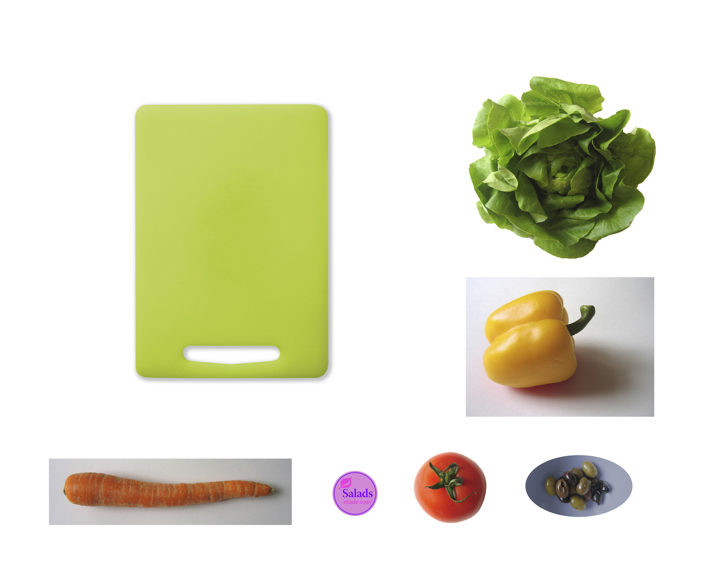

In Adobe Photoshop, a layer is a part of an image you can work with on an individual level without interfering with other aspects of the image. For example,you can place layers over each other without compltely blocking out the rest of the image. Using Adobe Photoshop's selections tools including the Magic Wand and Lasso, you can move and adjust pieces of layers instead of affecting everything within the layer. In a way, a Photoshop image is like an onion, with many layers which add up to the whole experience.